UnchartedX
Megalithic Sacsayhuaman: Older than the Inca? An investigation into megalithic architecture styles
Ben · 28 min · watch on YouTube · summarised 2026-09-29
Part two of a two-part look at Sacsayhuamán. Part one covered the site's location, its relation to Cusco, and the Incan symbology used as proof that the Inca built it 00:31–01:26. This one is a walking tour of the site, including areas Ben says most visitors do not reach, built around a single proposition: that the Inca found Sacsayhuamán as an abandoned megalithic ruin, rebuilt it, used it and integrated it into their culture rather than building it from scratch.
The classification the whole video runs on
Ben adopts the three-style system of Jesús Gamarra, whose father has worked on these sites for more than fifty years and who has published several books in Spanish 02:04–02:45. He sets that system out in full in an earlier video of his own, summarised separately here. Two of the three names are printed on screen later in the video, over the stones they label. He is explicit that he is taking the classification and not the rest: "I'm not really into most of his theories, but in terms of his classification system… it's one of those things that becomes elegantly simple after the fact."
The three styles, as he describes them:
| style | what it is | where it sits |
|---|---|---|
| Hanan Pacha | the monolithic work — shapes cut into the living rock itself, usually one piece rather than blocks | always at the bottom layer, at the centre of sites, with other masonry built on top; "always looks extremely eroded relative to other work" 02:45–03:31 |
| Uran Pacha | the classic South American megalithic style: cellular polygonal walls, many blocks, very tightly joined, often stone moved in from elsewhere, sometimes vitrified or shiny on the surface | Cusco, Ollantaytambo, and the zigzag walls of Sacsayhuamán 03:31–04:12 |
| Ukun Pacha | Inca work — loose stone walls, sometimes mud mortar, "fairly primitive" and used to repair | on top of the other two, and all the terracing 04:12–04:37 |
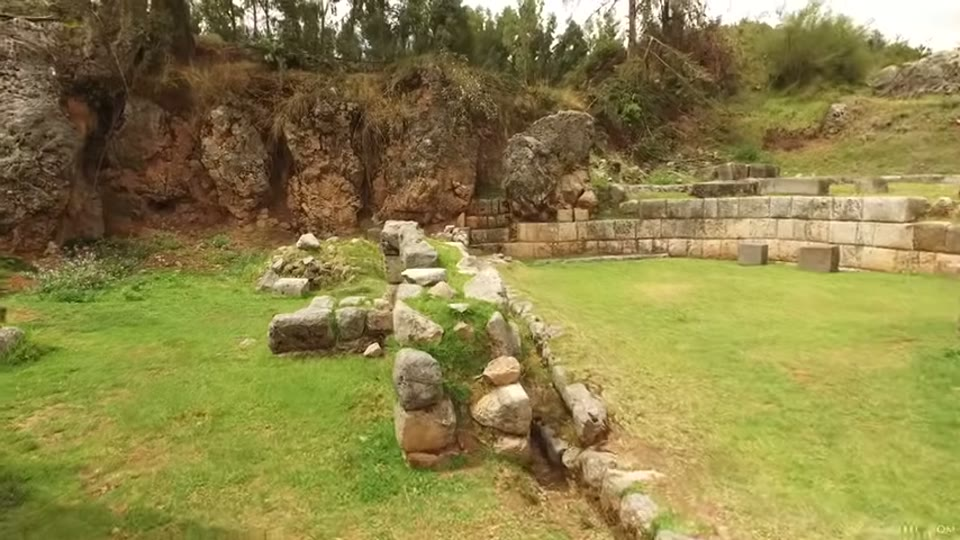
Three different qualities of stonework in one view, which is the claim the video is built on.
His attribution is stated plainly and it divides the site in two 04:26–05:10. All the Ukun Pacha work is the Inca's, and he says they were prolific and talented builders whose style is consistent with their artwork. What he says they did not have is the capability to move the stones in the megalithic walls or to reach that level of precision. Of the oldest layer: "God only knows who did the oldest work… it's so strange it's hard to even relate it to a human civilization." He then interrupts himself to say what he is not arguing 05:10–05:17: "Christ, here we go, man's talking aliens — I'm not talking aliens."
The zigzag walls, and what is claimed about the size
The five terraces of zigzag wall are what a visitor is brought to first 05:22–05:46. On the blocks themselves 05:46–06:47: some have been excavated and refilled, and the bigger ones go down 12 to 15 feet; the tallest block on the site is "nearly 30 feet tall from bottom to top including what's in the ground"; and the weights are given as "the most credible estimates put some of the largest ones at over a hundred and fifty tons". He reports having heard estimates up to about 400 tons and says that is "probably pushing it a little bit."
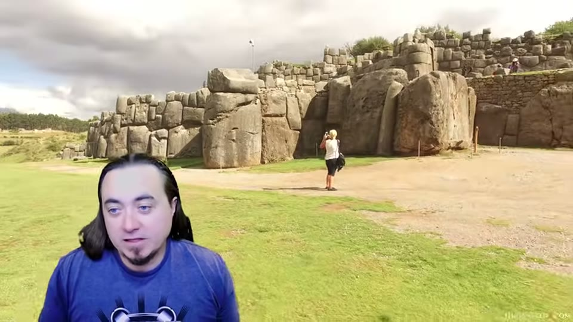
The size of the largest blocks in the zigzag wall, against a person.
Two qualifications he raises himself 06:47–07:30. The site was buried in soil by the Spanish and later excavated, so whether today's ground level is the original one is an open question. And the walls have been extensively quarried — "most experts will tell you that there were at least three to four meters higher than what they are now." There are five courses, with the biggest blocks at the bottom but large stones in the upper courses too. Walking up, he notes the masonry style changes: less rounded, straighter and more precise the higher up the hill 08:27–08:47.
The Inca as repairers
The argument for repair is made from how the walls fit 08:47–09:18. The blocks go together "in one particular way… like putting together a giant jigsaw puzzle," and he reports Inca repair work at many other megalithic sites.
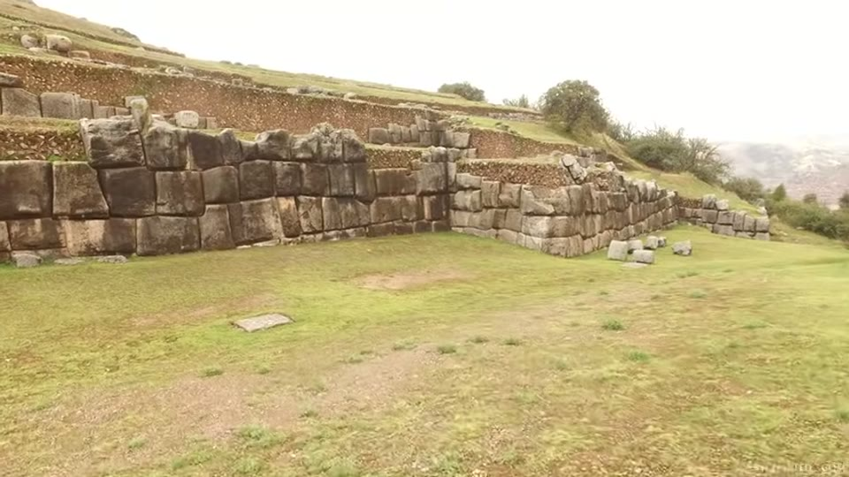
Small coursed work sitting above the large polygonal work.
From that he reads a feature seen elsewhere: megalithic blocks propped on smaller stones, in a couple of places in the streets of Cusco and on some of the giant blocks at Ollantaytambo 09:18–10:07. His account is that the Inca, replacing stones that only fit in one orientation and one spot, sometimes had to build up a little foundation underneath.
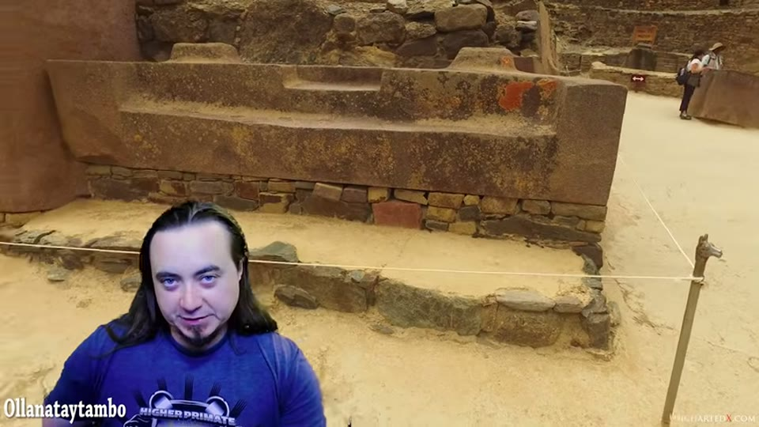
A megalithic block resting on a course of small stones.
The transport point is made at Ollantaytambo rather than here 10:07–10:45: the granite quarry is at the top of the mountain across the valley, the stones had to come down, cross the river and go up the steep hillside, and one stone was left partway up the mountainside — when the modern road went in, it was built around the stone. What is on screen through this passage is a photograph of a group of visitors on a hillside, one of them pointing out across a hazy valley; the quarry itself is not resolvable in it.
The backfill observation
This is the piece he presents as his clearest evidence, and he flags its status before making it 10:45–11:52: "I haven't found a picture of this, but I've read the reports that said…" — that where Inca walls were built on top of the older megalithic work, the backfill of those Inca walls contains megalithic blocks.
His reasoning from it: if you made the block, it has a home in a wall somewhere; if you found the site and could not work out where a block went, you would use it anyway. He extends the same reading to Cusco, where megalithic blocks appear as lintels in doorways, inserted into walls, and in whole structures rebuilt with cement — and notes the Spanish did the same thing 11:52–12:24.
The top of the hill
The stone changes on the way up: not just limestone but andesite, in blocks he describes as very straight-edged 12:24–13:05. Few are left, which he attributes to their having been valued for quarrying. He compares them to masonry at the Coricancha, and says they remind him of things at Puma Punku or Tiwanaku in Bolivia.
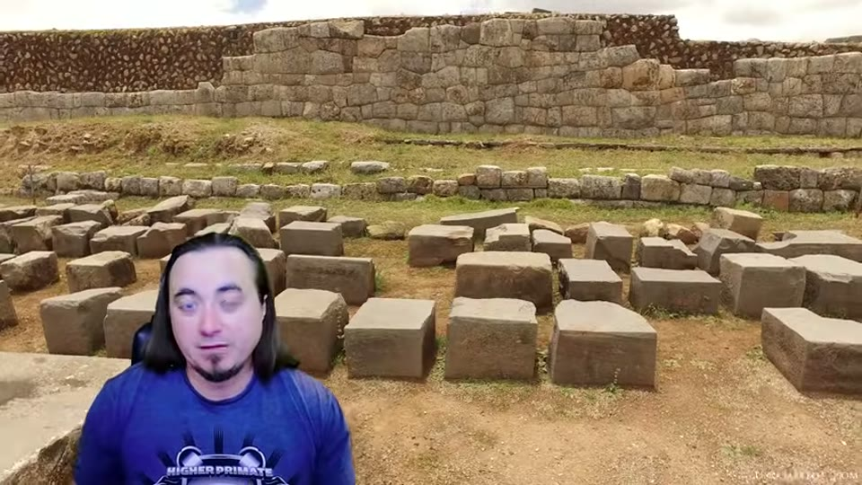
The straight-edged blocks near the summit.
What survives on the summit is the foundation of a large circular structure, called by some the eye of the Puma 13:05–14:03. Ben reports from Spanish chroniclers and later writers that it once had at least four or five levels, and that there may have been as many as three towers on the hilltop. Everything above the foundations has been quarried away, "so we really don't know what this looked like originally."
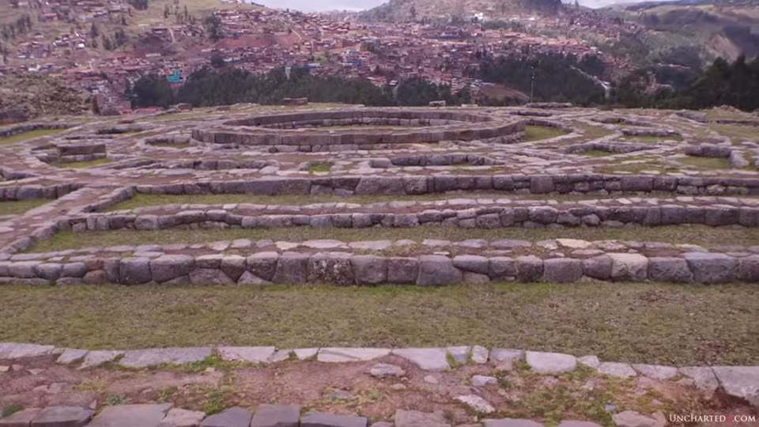
The circular foundations on the hilltop, with Cusco below.
From there he offers a continuity claim 14:03–14:37: the masonry resembles the Coricancha, Manco Cápac's palace lies downhill in the same direction with the same kind of walls, and his reading is that Sacsayhuamán "may have flowed all the way down the hill to the Coricancha originally as all part of one giant megalithic construction."
The Rodadero, and the ground level
The rounded hill facing the walls is a natural lava extrusion, and he counts it as Hanan Pacha because of the shapes cut into its rock 07:34–07:58. Its cellular walls are large and terraced, and the observation he draws from them is about level 14:37–15:19: the rock courses run down into the ground, which he reads as the original ground level having been lower than today's, the alternative being that someone deliberately built a wall heading into the earth. The claim is made over general views of the Rodadero terraces; no frame isolates a course continuing below the present ground surface.
The quarry
Where the limestone came from is left open 15:19–16:10. The hill at Sacsayhuamán is not limestone, so the blocks were brought in; the quarry location "isn't really well known." He credits Brien Foerster with videos searching limestone hills in the area, reports limestone within about 10 kilometres with what look like quarry marks, and says there are "no obvious quarries."
Where he disagrees with the casting hypothesis
The mainstream work in this video is aimed at an alternative claim rather than at academia 16:10–18:19. On geopolymer he says he is "yet to be fully convinced," and states what would convince him: "I'm waiting for somebody to actually do an experiment to say, well here's your limestone block that looks just like this, and I've made it out of geopolymer, and here's the process."
What he reports on the other side: work in Bolivia at Tiwanaku that found carbon inside the andesite stones, "which doesn't make any sense", and which he hopes is pursued. As far as he knows no comparable analysis has been done at Sacsayhuamán — different stone, and a slightly different form of architecture from Tiahuanaco.
His three objections:
- One mould per block. "If you're building a wall, why is every single block a different shape and size? That means that you have as many moulds as there are blocks."
- Fitting is still required. Even granting cast blocks, "you then have to make them fit together, and that's a very difficult process."
- The curved shapes. The shapes that extend all the way through the rock he thinks "must have been carved or shaped."
And the step he says the question does not turn on: "In either case, either it's geopolymer or not, you're still talking about a form of technology that the Inca did not have access to." He adds that there are no accounts of the Inca making concrete and that the Spanish were the first to use real concrete there.
His own position is left open: "Somebody had the ability to work with this stone in a fundamental way that we don't understand… I certainly don't have the answers."
The damage, and the one place the order is visible
Behind the Rodadero the rock carries shapes he calls classic Hanan Pacha — flat surfaces, square cut-outs, and what he describes as "curvature, almost liquid shapes" 18:19–19:04. In one unvisited part of the park he points at rock that "almost looks as if it's been melted and flowed into place" 19:04–19:24.
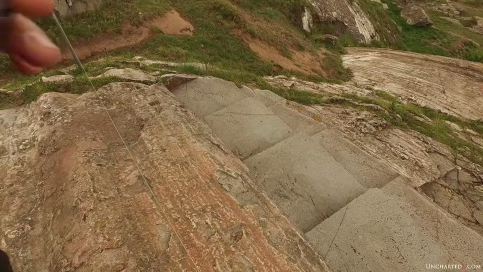
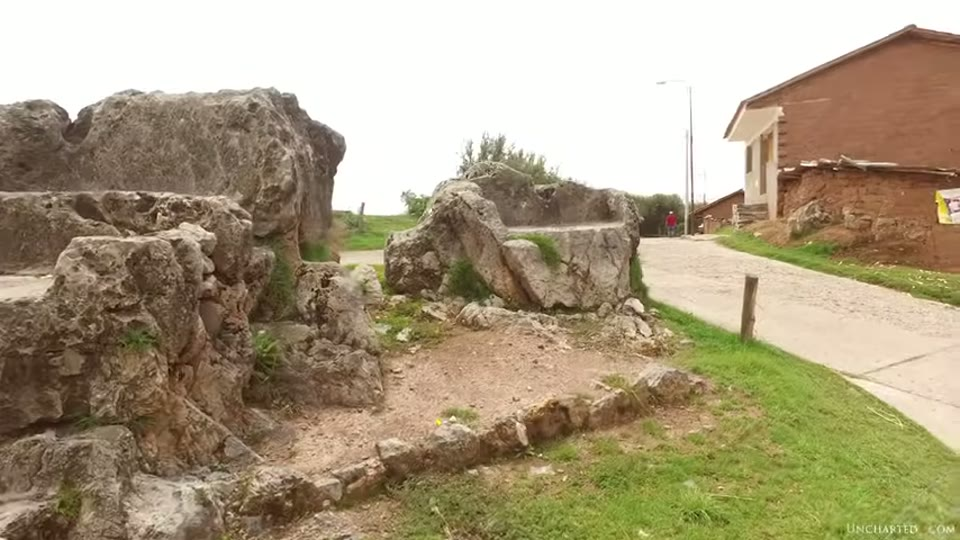
The shapes cut into the living rock that the oldest style is defined by.
Further round he reads the same area as damaged 19:24–20:12: big chunks of rock split apart and rolled, an "upside-down staircase", walls visibly split. He argues the surfaces are worked rather than natural — "you'll see a lot of straight stone walls and things like that, so this isn't a natural effect" — and calls it evidence of "tremendous cataclysm."
The stratigraphic point follows 20:12–21:13. In this area all three styles are present, and there is a stone that was moved in the destruction and came to rest in front of megalithic blocks — which he reads as meaning those blocks were already in place when the destruction happened. He marks how unusual he finds it: "it's one of the very, very few examples I can find where the orders don't always match up." This is the frame where the editor labels the two styles in writing: Hanan Pacha, rolled in front of the block, Uran Pacha, megalithic wall behind it.
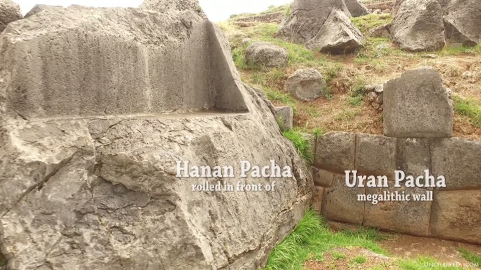
A displaced block resting against a megalithic wall, labelled on screen with the two style names.
The courtyards, and three layers in one place
Several small circular depressions and courtyards run round the back of the site 21:38–23:08. In them the megalithic walls curve around the older carved rock, which he reads as the megalithic builders "respecting this more ancient work… it's like a gentle touch almost." One of these areas carries all three styles at once, and his conclusion from it is that the site is "quite likely the result of three entirely different phases of occupation and building here, two of those phases coming from quite possibly pre-cataclysmic times."
Tunnels
The Chinkana Chica, the little tunnel, takes about a minute and a half to walk and is completely dark in the middle 23:08–24:09. Beyond it he reports that Sacsayhuamán is said to hold many other tunnels, that there are reports of the government closing access to tunnel systems as far back as the 1920s because people were getting lost, and that Incan tradition has a tunnel running from Sacsayhuamán to the centre of Cusco, coming up in the Coricancha 24:09–24:35.
In the far back corner of the park is a large stone he calls the chinkana or tunnel block 25:13–26:41, which he thinks is natural rock or a chunk of hillside that rolled down, carved with shapes and seats. The Incan legend attached to it is that a tunnel entrance lay where the rock now rests, the rock rolled onto it, and the Inca had to dig down through the stone to reach the entrance again. On the far side he points out a staircase split off from the block, which he suggests may have been an internal staircase cut down towards a tunnel entrance.
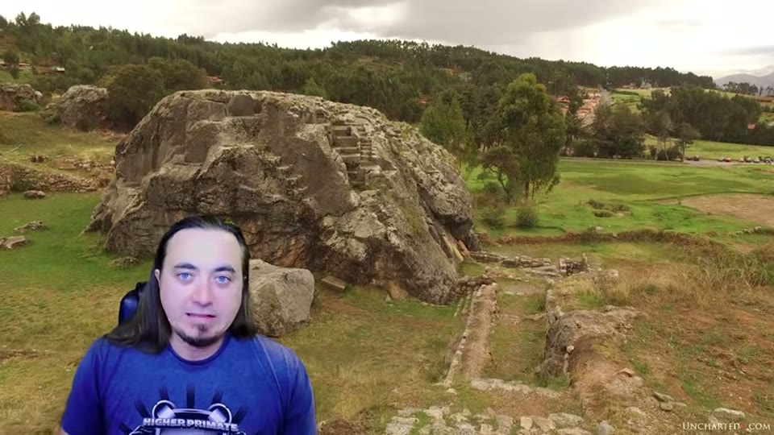
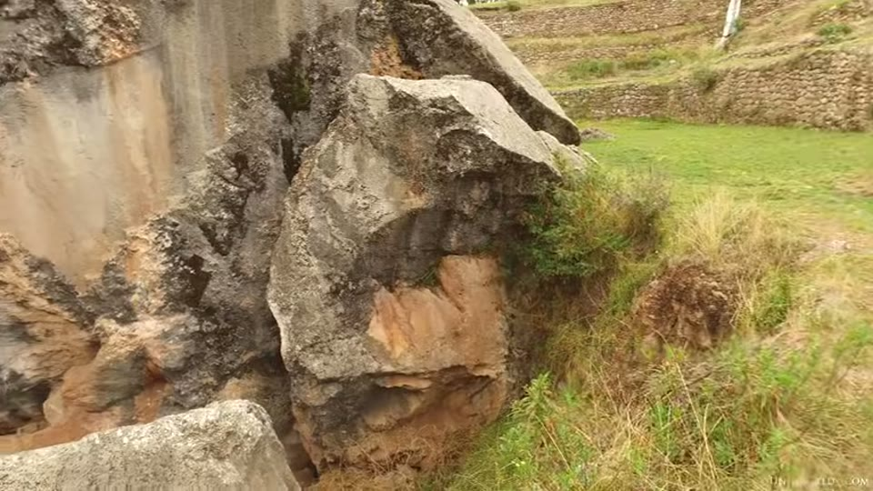
The carved outcrop at the back of the park, and the slab split from it.
Where he takes it
The closing position is narrower than the channel's usual one and he states its limits 17:49–18:19: the evidence does not line up with what is known about Inca capability, "and if they didn't do it, somebody else did. We don't know who that was." His request is that the site be investigated with that possibility in mind "as opposed to just ruling it all done by the Inca and just ignoring all of the contradictions that are evident in this architecture."
What you can check yourself
- The three styles are on the hillside and in ordinary tourist photographs. Whether the work at Sacsayhuamán sorts into carved living rock, tight polygonal walls and loose small-block masonry — and whether the third sits on top of the other two — is the whole argument, and it takes no instruments.
- Gamarra's classification is published. The books are in Spanish and the system can be read in the original rather than in a summary of it.
- The block dimensions are claims about a standing site. How deep the excavated blocks go, how tall the tallest is, and how many courses the zigzag walls have are all measurable by anyone who goes.
- Megalithic blocks reused in Cusco — as lintels over doorways, inserted into later walls — are on the streets and are photographable.
- Whether the hill is limestone, and whether the summit blocks are andesite, is a petrological question with a published answer, and it is what the transport claim rests on.
- The Rodadero courses running into the ground can be photographed and their depth compared with the ground level in front of them.
- The Ollantaytambo quarry is on the mountain across the valley and the stone the modern road was routed around is still beside it.
- Whether any material analysis of Sacsayhuamán stone has been published is a findable question. He says that as far as he knows none has been done.
- The Chinkana Chica is open and takes about ninety seconds to walk.
What the video does not settle
- The frame offered for the three styles shows them side by side, not stacked. Over the passage claiming all three layers in one place, what is on screen is weathered rock at the left, a coursed wall at the right and a line of loose stones across the foreground — three qualities of work in one view, distributed across it rather than one above another.
- The quarry in the transport argument is not shown. The Ollantaytambo passage runs over a photograph of visitors on a hillside with one of them pointing across the valley; the quarry is not resolvable in the image.
- The example of a propped block is at Ollantaytambo, not here. The narration reaches the feature through the streets of Cusco; the footage carries the editor's own location caption for Ollantaytambo.
- The classification is adopted rather than tested. The three styles are the frame for everything that follows, and no criterion for assigning a given wall to a style is given beyond its appearance. Ben says in the same passage that he is not persuaded by most of Gamarra's other theories.
- The backfill observation is read about, not seen. He says so plainly — no picture found, reports read. No report, excavation or author is named, and it is the observation he presents as clearest.
- Nothing dates any of the three styles. No radiocarbon, no stratigraphic section, no excavation result appears in the video. The order is argued from position — one style sitting under another — and from appearance.
- The erosion comparison is made by eye, across different materials. The oldest style "always looks extremely eroded relative to other work". The video also states that the hillside rock is not the same stone as the imported limestone blocks, and that the summit blocks are andesite. The two statements are not brought together.
- The weight figures are unsourced. "The most credible estimates" for over 150 tons, and the 400-ton figure he sets aside, arrive with no measurement, method or source; so does "most experts will tell you" for the walls having stood 3–4 m higher.
- The Inca capability claim is asserted. That they could not move stones of this size or reach this precision is the load-bearing premise and no load figure, transport study or comparison with documented Inca work is offered for it.
- The cataclysm is named and not evidenced. Split and displaced rock is shown; no date, mechanism or deposit is proposed for what caused it.
- The layering evidence is one stone. He says as much — "one of the very, very few examples I can find where the orders don't always match up" — and no other instance is shown.
- The quarry is not located. Limestone hills within about 10 km with what look like quarry marks, sourced to another presenter's videos, and "no obvious quarries".
- The geopolymer objections are argued, not tested. He names the experiment that would settle it for him and none is performed or cited here, and no analysis of Sacsayhuamán stone is available to him. The Tiwanaku carbon result he reports is for a different site and a different stone.
- The eye of the Puma is reconstructed from chroniclers. Only foundations survive; the four or five levels, the three towers and what the structure was are all reported rather than shown.
- The Coricancha continuity is a resemblance. That Sacsayhuamán and the Coricancha were once one construction rests on similarity of masonry along a line downhill, with no survey or excavation between the two points.
- The tunnel material is report and legend, and is presented as such — the 1920s closures, the Sacsayhuamán-to-Coricancha passage, and the story attached to the chinkana block.
The same walls, cast rather than carved
How Were Sacsayhuamán Polygonal Walls Built? argues the hypothesis this video declines: that the blocks were cast in place from a material with a limestone-powder binder. It carries the one laboratory result in the dispute — seven block samples analysed for Peru's Ministry of Culture, whose report says the process that formed them "is impossible in nature" — which is the kind of analysis Ben says he does not have for this site.
The two accounts meet head-on and the disagreement is stated in both. Her reading has the irregular block shapes explained by pouring against neighbours already in place; his first objection is that irregular shapes mean one mould per block. The knobs, the bulging faces and the scrape marks she reads as casting evidence are catalogued in Megalithic Knobs Worldwide.
Names heard rather than confirmed
No caption track exists for this channel and this 2019 transcript is among the worst of them: Sacsayhuamán arrives as "sex a woman" and "sex-linked among", Ollantaytambo as "Atalanta Tambo", the Coricancha as "quarry contra" and "core akansha". Corrected from context: Sacsayhuamán, Cusco, Coricancha, Ollantaytambo, Manco Cápac, Puma Punku, Tiwanaku, Q'enqo (spoken as "Kenko"), Graham Hancock, and lintels for "lentils".
Two of the three style names came off the screen rather than out of the audio. At 20:50–21:00 the editor captions the two stones in frame Hanan Pacha and Uran Pacha, which is how they are spelled here; the narration gives them as "Hannon pocha", "hunting putchar", "Odin Pacha" and "Oran Parcher" throughout. The third, Ukun Pacha, is never captioned — it arrives only as "a cone pocha" and "econ picture", and is reconstructed from Gamarra's published system rather than read or heard.
Jesús Gamarra arrives as "hey-zeus Kamara" and the identification is made from the description — a Peruvian researcher, his father before him, fifty years of work, books in Spanish. Brien Foerster is spoken as "Brian Forrester". The Rodadero is written "Road Adaro" in the channel's own chapter titles and is not spoken clearly anywhere. The editor's own location caption reads "Ollanataytambo" wherever that site is on screen.
Two phrases could not be resolved. The block identified at 08:00–08:27 is called something like "the so-called Pumas Paul" and is not named here. At 12:42 the andesite blocks are said to have been "highly valued for chlorine", in a sentence about why few remain on the summit; the word is not recoverable from the audio.